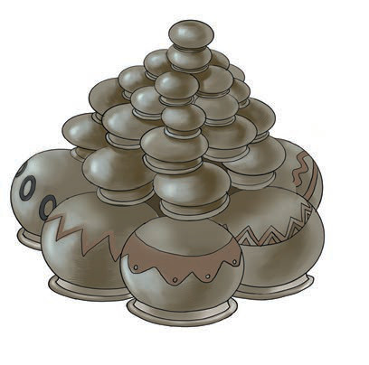

Kielelezo namba 14: Vyungu vilivyopangwa katika mtindo wa msonge
Usafi wa eneo la kazi
Eneo ambalo kazi ya ufinyanzi na uchomaji wa vyungu hufanyika, linaweza kuchafuliwa au kuharibiwa. Hivyo, ni sharti eneo hilo lirekebishwe na kusafishwa baada ya kazi. Katika shughuli ya ufinyanzi na uchomaji wa vyungu, mambo yafuatayo yanapaswa kufanyika:
(a)
Kuzima moto wa tanuri;
(b)
Kukusanya majivu na masizi na kuyafukia;
(c)
Kufagia takataka zilizozalishwa na kuzifukia; na
(d)
Kufukia na kusawazisha mashimo sehemu zilizochimbwa udongo na tanuri.

Kazi ya kufanya namba 4
Tumia vyanzo mtandao kuangalia au tembelea eneo lolote katika jamii yako ambapo inafanyika shughuli ya ufinyanzi kisha fanya yafuatayo:
(a)Chunguza namna vifani hivyo vinavyotengenezwa.
(b)Andika vifani ulivyoviona na namna vinavyotengenezwa.
(c)Wasilisha kazi yako mbele ya darasa kwa mwongozo wa mwalimu